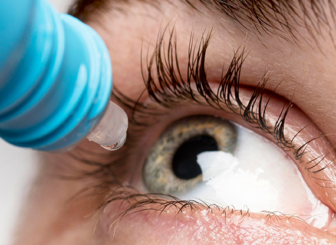
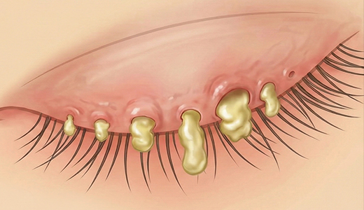
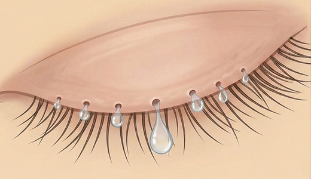
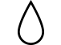
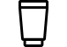
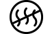
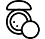
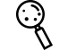
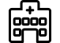

단순한 뻑뻑함을 넘어 각막 상처와 혼탁을 막기 위해
눈물층의 기능을 회복하는 적극적인 관리가 필요

IPL 치료는 안구건조증 증상 완화에 있어 안전하고
유효한 기술로 염증 상태를 개선 및 치료하며 염증이
오래되어 딱딱하게 굳은 기름샘을 치료합니다.
또한 모낭충(데모덱스*)의 치료도 합니다.
총 4번 이상의 치료를 진행
2주에서 3주 간격으로 치료
젤 도포 후 눈꺼풀 부위에 광선을 조사
낮은 에너지를 사용하여 안전하고 효과적으로 치료
치료 후 바로 일상생활이 가능

치료 전 염증이 생겨 딱딱하게 굳은 기름샘

IPL 치료 후 깨끗하고 맑은 기름샘
딱딱하게 막혀있는 마이봄샘 선에 IPL을 조사하여 녹여
마이봄선장애의 근본적인 원인인 염증수치를 줄여줍니다.
시술은 보통 2주 ~ 4주 간격으로 진행되며 피부 상태에 따라 시술 간격이 달라질 수 있습니다.

시술 후 느껴지는 약간의 열감은 자연스러운 현상이며, 피부가 건조하다 느껴질 수 있으니,
보습 크림, 수분팩 등으로 관리하면 좋습니다.※ 시술 직후 열감이 불편하게 남는 경우, 즉시 직원에 문의하세요.

시술 후 1주일은, SPF50 이상의 자외선 차단제를 자주 발라 햇빛에 직접 노출되지 않도록 합니다.

시술 후 1주일은, 지나치게 땀을 흘리는 운동이나, 온도가 높은
환경 찜질 및 사우나는 피해주시고, 음주 또한 자제하는 것이 좋습니다.

시술 직후 메이크업은 가능합니다. 피부 자극을 덜 주기 위해 2일 정도는 가벼운 메이크업을 해주세요.

치료 부위에 점이나 주근깨 등의 색소 병변이 있을 경우, 시술 후 더 진해 보일 수 있으나
자연스러운 현상입니다. 시간이 지날수록 점점 흐려지며, 피부에 딱지처럼 생긴 경우,
억지로 뜯거나 문지르지 않고 자연 탈락될 때까지 기다립니다. (약 4~5일 소요)

시술 부위 열감이나 홍반이 수일 동안 지속될 경우,
반드시 병원으로 내원해 주시기 바랍니다.

월 화 목 금
am 09:00 ~ pm 06:00토 요 일
am 09:00 ~ pm 04:00점 심 시 간
pm 01:00 ~ pm 02:00수요일, 일요일, 공휴일 휴무입니다.
공휴일 있는 주는 수요일 대체진료입니다.